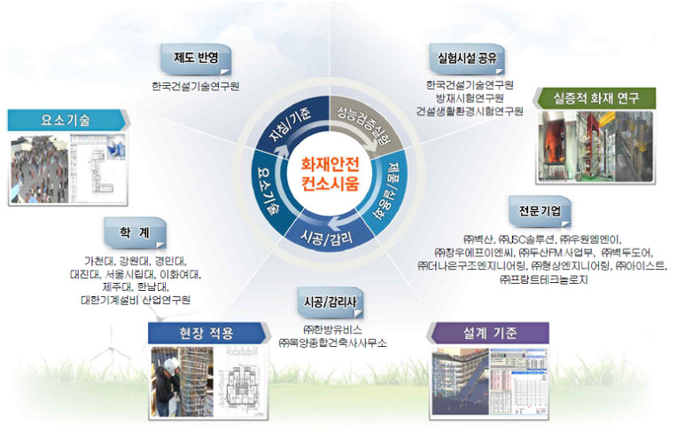

한국건설기술연구원 등을 중심으로 '화재안전연구단'이 구성되어 '건축물의 성능위주 화재안전 설계기준 및 화재안전성 향상 기술개발' 연구가 진행되어 왔습니다.
2015년부터 시작된 연구로 올해가 5차년도 인데요. 올해 10월 (2019년 10월) '성능위주 화재안전 설계기준'을 중앙건축심의위원회에 상정한다고 합니다.
건축물의 성능위주 설계 제도화와 화재안전가이드라인의 요구로 시작된 동 연구는 건축물의 화재위험의 저감과 화재시 신속한 대응 및 피해최소화를 목표로 화재안전 기준과 관련 기술을 개발하였습니다.
이중 건축자재에 해당되는 부분은 크게 2가지인데요.
첫번째는 '건축물 마감재료의 연소가스 유해셩 시험방법 개발 및 연소독성지수 DB구축'이고
두번째는 '실대형 화재시험을 통한 건축물마감재의 평가방법 및 기준개발'입니다.
건축물 마감재료의 연소가스 유해성 시험방법 개발 및 연소독성지수 DB구축 | ||
● 건축물 마감재료 성능평가에 적합한 연소가스 유해성 시험방법 구축 | ||
● 연소가스 정량분석 및 유해성 DB구축 | ||
● 연소가스 분석을 통한 연소독성지수 산정 및 기준마련 |
실대형 화재시험을 통한 건축물 마감재(내외장재)의 평가방법 및 기준개발 | ||
● 건축물 마감재료의 실대형 화재시험 방법 제시 | ||
● 건축물 마감재 시험 및 DB구축 | ||
● 건축물 마감재 (내 외장재) 가이드라인 도출 |

연구단 구성
동 연구단에서는 지금까지 여러채널을 통해서 지속적으로 제기되어온 '가스유해성 시험방법'과 '콘칼로리미터법'의 문제에 대한 개선안에 대한 연구를 해오고 있는듯 합니다.
이런 문제와 관련해 최근 국토부에서는 건축자재의 시험 제조 유통 단계에서의 관리를 강화하기 위한 방안 마련을 위해 '건축자재 화재안전성능 고도화 방안 마련 전문가 자문단(TF)'을 구성해 운영해 들어갔다고 밝혔는데, 위 연구단의 구성과 유사한 면을 보이고 있네요.
또한 '실대형 화재시험방식'을 연구개발(R&D)을 통해 개발중이라며, 이를 샌드위치패널 등에 적용하는 방안을 마련하고 있다고 밝혔는데, 이 역시 동 연구단에서 진행해온 연구개발과 동일한 내용임을 알 수 있습니다.
이상으로 볼때, 올 10월 중앙건축심의위원회 상정을 기점으로 건축물 마감재의 시험방법에 대한 변화가 있을것으로 예상해봅니다. ~
깐깐한 기준으로 만들어진
EPS 준불연 단열재 DK보드는
어떤 시험방법도 OK 입니다.
준불연 가등급 EPS 단열재 DK보드
건축용 / 외단열용 / 판넬용
문의 1855-2240